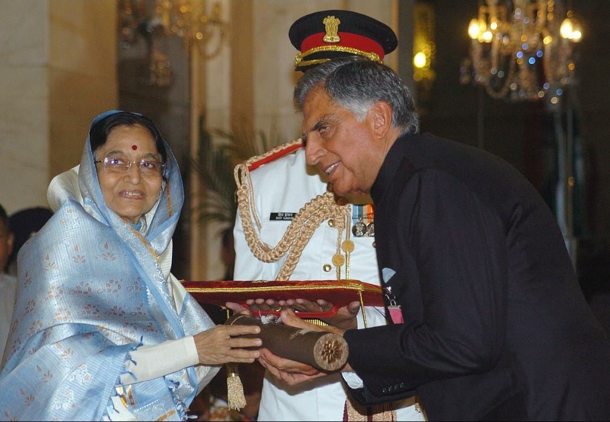

Honours and awards
2008
Ratan Tata received the Padma Bhushan in 2000 and Padma Vibhushan in 2008, the third and second highest civilian honours awarded by the Government of India.Tata also received various state civilian honours such as 'Maharashtra Bhushan' in 2006 for his work in the public administration in Maharashtra and 'Assam Baibhav' in 2021 for his contribution towards furthering cancer care in Assam.
